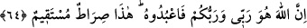

bundan dolayı “bir kısmını size açıklamak için” denilmiştir. Çünkü onların ayrılığa
düştükleri konuların beyanı hikmettir.
“Öyleyse Allah’tan korkun ve bana itâat edin.” Nitekim bir diğer âyet-i kerîmede
“kim peygambere itâat ederse Allah’a itâat etmiş olur” (en-Nisâ, 4/80)
buyrulmaktadır.
64. Çünkü Allah, benim de Rabbim, sizin de Rabbinizdir. O’na ibadet edin. İşte
bu, doğru yoldur.
“Çünkü Allah, benim de Rabbim, sizin de Rabbinizdir.” Öyleyse tevhîd ve ibâdeti
O’na tahsis edin. Bu onlara emredilen tâatin açıklamasıdır ki bu da tevhid inancı ve
şerîat hükümleriyle amel etmektir. “O’na ibâdet edin. İşte bu, doğru yoldur.” Bu yola
giren sapıtmaz.
et-Te’vilâtü’n-Necmiyye’de şöyle denilmektedir: Hz. Îsâ diyor ki: Bana değil,
Allah’a ibâdet edin. Zîrâ kulluk ve ibâdette ben de sizinle beraberim. Allah ise Rab
oluşunda tektir. İşte hepimizin O’na ibâdet etmesi, dosdoğru yoldur.
65. Ama aralarından çıkan guruplar, bir ihtilâfa düştüler. Acı bir günün azâbı
karşısında vay o zulmedenlerin hâline!
“Ama” Îsâ (a.s.)’dan üçyüz sene sonra Yahudi ve Hristiyanların “aralarından çıkan
guruplar, bir ihtilâfa düştüler.” Îsâ (a.s.) hakkında mel’ûn Yahudiler “Îsâ’nın anası
zinâ etmiştir. Dolayısıyla Îsâ veled-i zinâdır” dediler. Bazı hristiyanlar “Îsâ Allah’tır,”
diğer bazıları ise “Îsâ Allah’ın oğludur” dediler. Bazıları “Allah, Îsâ ve annesi üçü de
ilahtır. Allah, üçün üçüncüsüdür” dediler. “Acı bir günün azâbı karşısında vay o
zulmedenlerin hâline!”
“
/ahzâb” kelimesi “hizb” kelimesinin çoğuludur. İnsan topluluğu mânâsındadır.
Parti grupları ihtilâfa düştüler demektir. “Tahazzüb” ise güruh güruh toplanmak
demektir. O, kavmini partilere böldü onlar da partilere bölündüler, denilir. Yani kişi
kavmini fırka ve tâifelere ayırdı, onlar da öyle oldular. Bundan maksad, onların Îsâ
(a.s.)’dan 300 sene sonra ihtilafa düşmüş olmalarıdır. Zîrâ Hz. Îsâ hayatta olduğu
dönemde böyle bir şey yoktur. Onlar, Îsâ (a.s.) göğe kaldırıldıktan sonra bu bölünmeleri
ihdâs ettiler.
et-Te’vilâtü’n-Necmiyye’de şöyle denilmektedir: Îsâ (a.s.)’ın kavmi gurup gurup